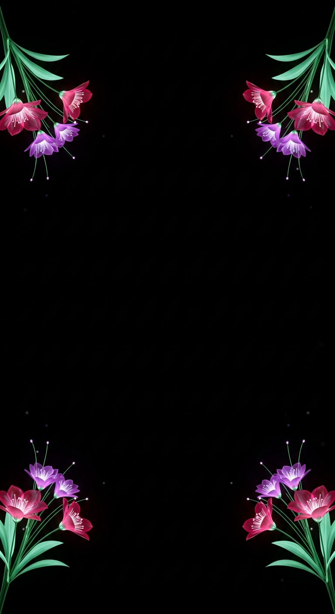
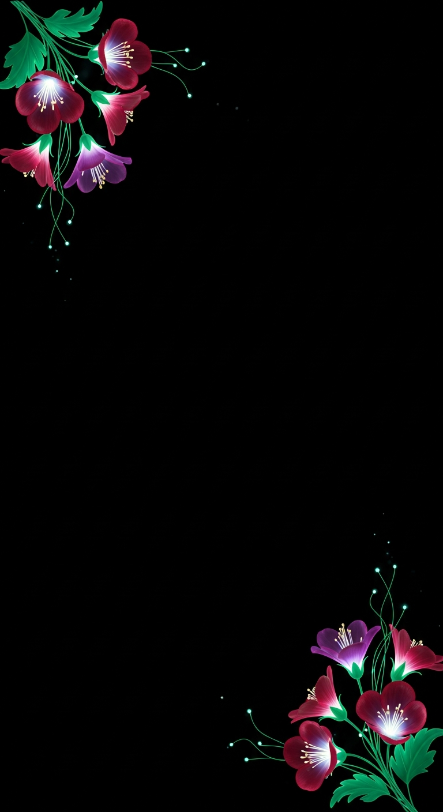
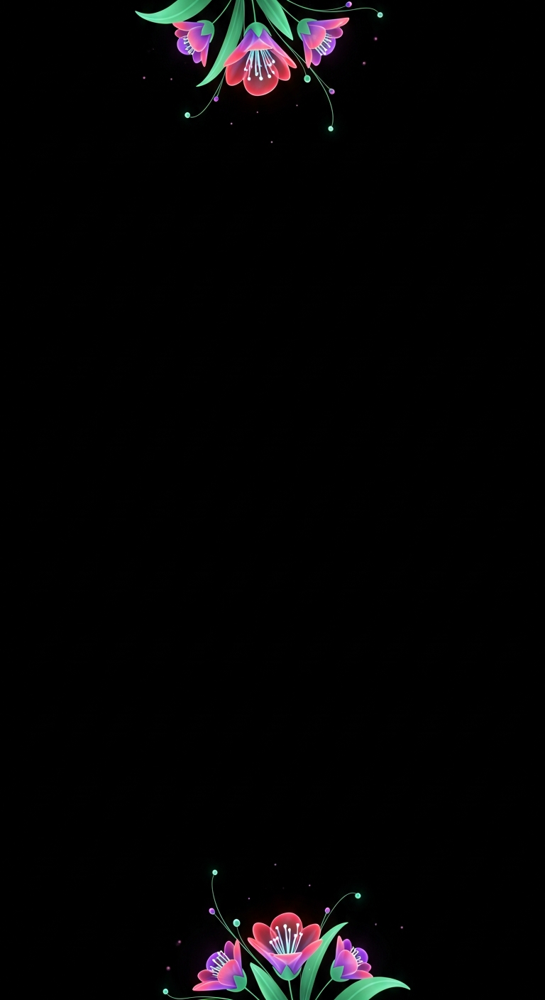
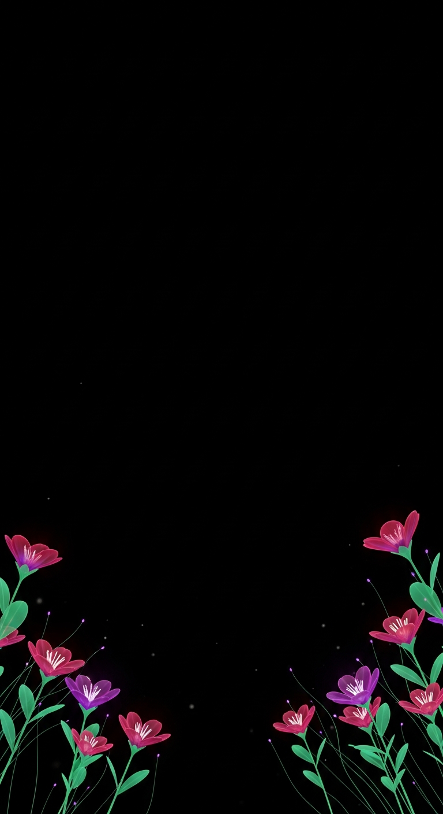

Same brand red/violet + teal 3D glow, pulled way back — small corner accents, most of the frame open black for your text. Four layouts (the faint label shows where text sits clearest). Pick one and I'll finalize it: transparent-center overlay + a gently-animated WebM.
Say the one you want (e.g. "the four-corners one") + any tweak — even less / a bit more · smaller blooms · which corners.

Tiny accents in all 4 corners — symmetric, text sits anywhere center.

Top-left + bottom-right only — open diagonal for text.

Small accents top + bottom — the whole middle is clear. Most text room.

Flowers rise from the bottom — top two-thirds fully open.